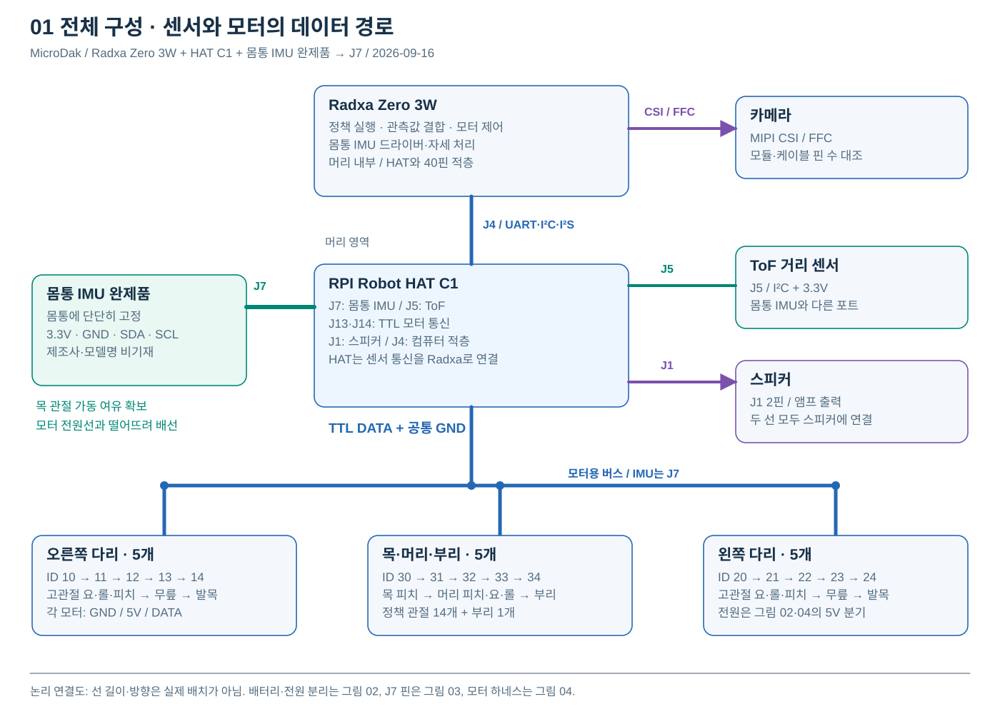
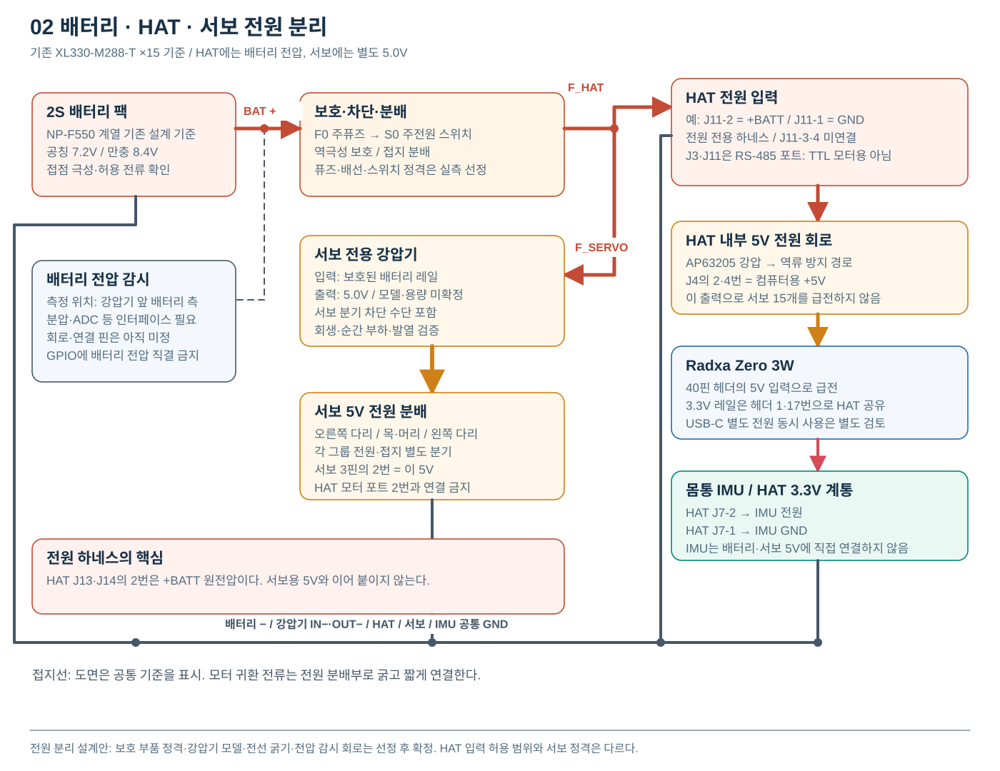
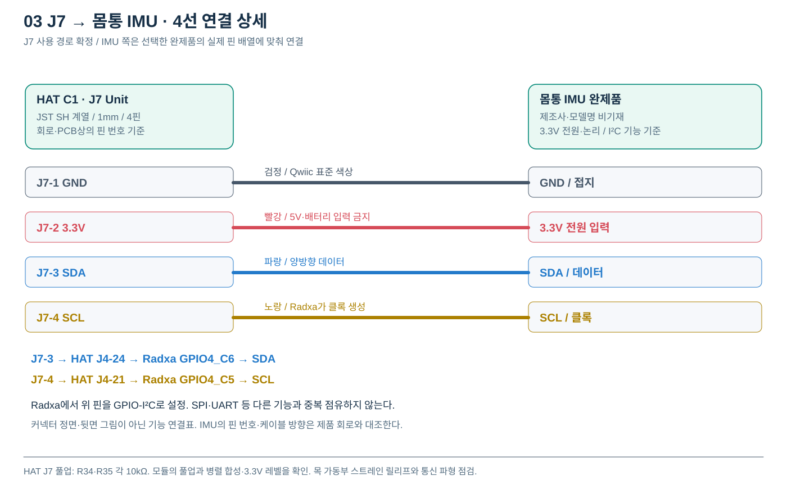
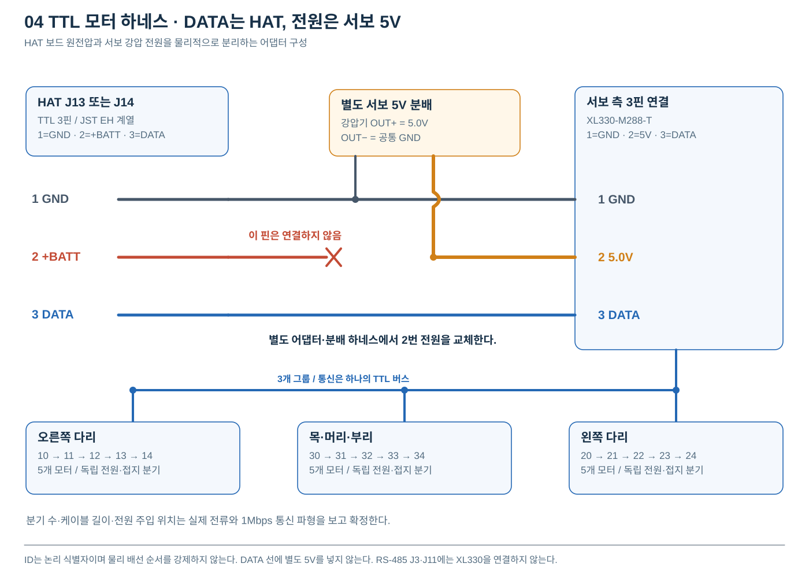

MICRODAK / ELECTRICAL SYSTEM
MicroDak 전장·보드 배선도
몸통 IMU 완제품 · HAT J7
몸통에 고정한 IMU 완제품을 HAT의 J7에 직접 연결하고, Radxa Zero 3W가 센서 데이터를 읽어 모터 제어에 사용한다. 전용 imu_to_dxl 보드는 구성에서 제외한다.
채택 근거: 사용자가 전달한 다른 개발자의 J7 연결 기립·보행 성공 보고를 바탕으로 이 경로를 채택했다. 보고 원문·상세 설정은 이 문서에 첨부되지 않았다. 이 보고는 해당 개발자 시스템의 실적이며, 현재 MicroDak의 실물 시험 완료 기록으로 합산하지 않는다.
1. 전체 구성과 보드의 역할

| 위치·항목 | 역할 | 실제 연결 |
|---|---|---|
| 머리 / Radxa Zero 3W | 정책 실행, 센서 수집·자세 처리, 모터 제어 | HAT J4 40핀 적층 / 카메라는 Radxa CSI |
| 머리 / HAT C1 | UART↔TTL 변환, 전원·오디오·센서 커넥터 | J7 IMU / J5 ToF / J13·J14 모터 / J1 스피커 |
| 몸통 / IMU 완제품 | 몸통 가속도·각속도 및 자세 입력 제공 | J7으로 3.3V·GND·SDA·SCL 연결 |
| 몸통 / 배터리·전원 분배 | HAT와 서보에 필요한 전압·전류 분배 | HAT용 배터리 레일 / 서보 전용 5V 분리 |
| 다리·목·머리 / 모터 15개 | 정책 관절 14개와 부리 1개 | 공통 TTL DATA, 그룹별 서보 5V 전원 분기 |
HAT의 머리 IMU는 몸통 IMU와 별도다. 움직이는 머리에서 읽은 자세를 몸통 자세로 그대로 사용하지 않는다. 몸통 IMU의 자세 계산은 모듈 기능 또는 Radxa 소프트웨어가 담당하며, HAT 자체에 새로운 IMU 처리 MCU를 추가하지 않는다.
2. 배터리와 전원 분기

| 구간 | 연결 방법 | 확정·검토 조건 |
|---|---|---|
| P01 배터리 → 보호·차단 | 배터리 + → F0 → S0 → 분배 / 배터리 − → 접지 분배 | 팩 방전 전류·접점·퓨즈·스위치 정격 선정 |
| P02 분배 → HAT | 전원 전용 4핀 하네스 예: J11-2 +BATT, J11-1 GND. 3·4번은 비워 둠 | J11 선택은 이 도면의 제안. 실제 납품 보드 핀 1·극성 대조 |
| P03 HAT → Radxa | HAT 내부 5V 회로 → J4-2·4 → Radxa / 헤더 공통 GND | 적층 방향·핀 1 대조. 별도 USB-C 동시 급전은 역류 경로 확인 |
| P04 Radxa → HAT 센서 전원 | Radxa 3.3V 헤더 1·17 → HAT +3V3 → J7-2 | HAT가 IMU용 3.3V를 별도 생성한다고 가정하지 않음 |
| P05 분배 → 서보 | 보호·서보 분기 차단 → 고전류 강압기 → 5.0V 분배 → 모터 2번 | 강압기 모델·용량·회생 대책·전선 굵기는 미정 |
| P06 배터리 전압 감시 | 강압 전 배터리 전압을 분압·ADC 등의 인터페이스로 측정 | 회로·ADC·신호 핀 미정. GPIO 직결 금지 |
공통 GND는 필요하지만, 모터의 큰 귀환 전류가 가는 배선을 가느다란 IMU 케이블이나 HAT 헤더로 우회시키지 않는다. 주전원 차단과 별도로 서보 분기 차단 수단을 두는 구성이다. 정지 시 필요한 제동·토크 해제 동작도 시험한다.
3. 몸통 IMU와 J7의 핀별 배선

| HAT J7 | 기능 | HAT J4 / Radxa 대응 | IMU 측 연결 |
|---|---|---|---|
| 1 | GND | 공통 GND | 모듈 GND |
| 2 | +3V3 | J4-1·17의 3.3V 레일 | 3.3V 입력에 적합한 전원 핀 |
| 3 | SDA로 사용 | J4 물리 24번 → GPIO4_C6 | 모듈 SDA |
| 4 | SCL로 사용 | J4 물리 21번 → GPIO4_C5 | 모듈 SCL |
J7을 이번 MicroDak의 몸통 IMU 포트로 사용한다. Radxa의 GPIO4_C6·GPIO4_C5를 GPIO-I²C 버스로 구성하고, 선택한 IMU의 주소·드라이버·샘플링 설정을 적용한다. 해당 핀을 SPI·UART·다른 오버레이가 동시에 사용하지 않도록 한다. 성공 사례의 OS·설정 자료가 확보되면 이를 우선 대조한다.
J7은 JST SH 계열 1mm 4핀이다. IMU가 동일 Qwiic 배열을 쓰면 표준 케이블을 사용할 수 있고, 다른 커넥터라면 위 기능 대응에 맞춘 하네스가 필요하다. 모델 비기재이므로 IMU 쪽 물리 핀 번호·주소·크기는 확정하지 않는다. HAT의 R34·R35는 각 10kΩ 풀업이며, 모듈 풀업과 합성 저항·상승 시간을 확인한다.
몸통에는 움직이지 않도록 고정하고 센서 축 방향을 기록한다. 목 관절의 전체 가동 범위에서 당김·끼임이 없도록 여유 길이와 고정부를 둔다. 모터 전원선과 거리를 두고 통신 오류를 측정한다. HAT PCB 핀 근거 · Radxa 헤더 핀 근거
4. 모터 15개와 전원 분리 하네스

| HAT TTL 포트 | 어댑터 연결 | 서보 측 3핀 |
|---|---|---|
| J13 또는 J14 / 1 GND | 공통 접지와 연결. 고전류 귀환은 전원 분배부로 | 1 GND |
| J13 또는 J14 / 2 +BATT | 핀을 비우거나 절연·분리. 모터 VDD로 전달하지 않음 | 2 VDD는 별도 강압 5.0V에서 공급 |
| J13 또는 J14 / 3 DATA | TTL 반이중 데이터 연결 | 3 DATA |
| 모터 그룹 | ID | 관절 순서 |
|---|---|---|
| 오른쪽 다리 | 10 / 11 / 12 / 13 / 14 | 고관절 요 / 롤 / 피치 / 무릎 / 발목 |
| 왼쪽 다리 | 20 / 21 / 22 / 23 / 24 | 고관절 요 / 롤 / 피치 / 무릎 / 발목 |
| 목·머리·부리 | 30 / 31 / 32 / 33 / 34 | 목 피치 / 머리 피치 / 요 / 롤 / 부리 |
Radxa UART2의 TX/RX가 HAT TTL 회로를 통해 하나의 1Mbps 반이중 DATA 버스를 구동한다. J13과 J14는 같은 TTL 버스의 연결점이며 독립 버스가 아니다. 세 그룹 연결에는 분배 하네스가 필요하고, 긴 별 모양 DATA 배선은 피한다. 모터 순서는 ID로 구분되므로 그림의 순서는 케이블 계획 예시다.
몸통 IMU는 이 모터 데이지체인에 넣지 않는다. 전용 IMU의 DXL ID 200 응답을 요구하던 호스트 경로를 제거하고 J7 센서 입력을 별도로 받는다. 기존 버스 코드
5. 커넥터·케이블 목록
| ID | 출발 → 도착 | 선·인터페이스 | 준비 사항 |
|---|---|---|---|
| C01 | 배터리 → 보호·분배 | 전원 + / GND | 극성 표기·퓨즈·주스위치·전류 정격 |
| C02 | HAT 전원 분기 → J11 | 4핀 중 1 GND·2 +BATT만 사용 | 전원 전용 표시, 3·4는 미연결 |
| C03 | HAT J4 ↔ Radxa 40핀 | 5V·3.3V·GND·UART·I²C·I²S | 핀 1 방향·적층 높이·고정 스페이서 |
| C04 | HAT J7 ↔ 몸통 IMU | GND / 3.3V / SDA / SCL | JST SH 1mm 쪽 + 모듈 규격에 맞는 하네스 |
| C05 | HAT J5 ↔ ToF | 1 GND / 2 3.3V / 3 SDA / 4 SCL | J7과 별도 버스 경로. 센서 주소·핀 배열 확인 |
| C06 | HAT J13·J14 → TTL 분배 | GND / DATA, +BATT 핀 제외 | 별도 5V 전원 주입 어댑터 |
| C07 | 분배 → 모터 그룹 | GND / 5V / DATA | 3개 그룹 길이·주입 위치·전류 측정 |
| C08 | Radxa CSI → 카메라 | MIPI FFC | 모듈·핀 수·접점 방향·길이 대조 |
| C09 | HAT J1 → 스피커 | 앰프 출력 + / − | J1-1·2 사이에 연결. 어느 선도 GND로 묶지 않음 |
| C10 | 배터리 감시 → Radxa | ADC 등 측정 인터페이스 | 아직 미정. 회로 확정 후 케이블 추가 |
HAT J2·J9는 외부 마이크/라인 입력 경로로 이 기본 구성에서는 비워 둔다. J6·J8은 예비 포트로 남긴다. 카메라는 HAT가 아니라 Radxa CSI에 연결한다. J1 스피커 출력은 브리지 출력이므로 일반 GND 신호와 구분한다.
6. Radxa의 데이터 처리와 설정
| 입력·처리 | 구현 내용 | 확인할 결과 |
|---|---|---|
| J7 IMU 수집 | GPIO-I²C 설정 → 모듈 식별·초기화 → 샘플 수집 | 지속적인 새 데이터, 오류·지연 계수 |
| 몸통 관측값 | 센서 축 → 몸통 축 변환, 각속도 rad/s, 자세·중력 벡터 산출 | 고정 방향·단위·정규화·타임스탬프 일치 |
| 모터 버스 | UART2 /dev/ttyS2 기준, 15개 모터만 읽기·쓰기 | IMU ID 200 누락 때문에 루프가 중단되지 않음 |
| 제어 루프 | 50Hz 기준으로 IMU·관절 관측을 결합 | 오래된 IMU 값·초기화 전 값 사용 방지 |
| 고장 처리 | IMU 오류·통신 단절 → 무효 표시·모터 정지·재준비 | 센서가 멈췄는데 정상 직립으로 처리하지 않음 |
모듈의 자세 출력 기능 유무에 따라 Radxa의 자세 계산 범위가 달라진다. 특정 센서의 레지스터·기본 주소·전용 라이브러리를 이 도면에서 지정하지 않는다. 이번 작업은 구성·배선 문서 갱신이며 실제 로봇의 드라이버 설치·펌웨어 수정 완료를 뜻하지 않는다.
7. 조립·시험 순서와 진행 상태
| 순서 | 시험·확인 | 완료 조건 |
|---|---|---|
| 1 | 무전원 연결 검사 | 배터리 극성, J7 핀 대응, HAT +BATT와 서보 5V 절연 확인 |
| 2 | 전원 단독 시험 | HAT 5V·J7 3.3V·서보 5V 측정. 단락·이상 발열 없음 |
| 3 | Radxa + J7 IMU 단품 | 센서 초기화·몸통 축·데이터 갱신·목 가동 중 통신 확인 |
| 4 | 모터 1개 → 한쪽 다리 → 15개 | ID·방향·부하 전류·전압강하·TTL 통신 기록 |
| 5 | IMU와 모터 동시 운용 | 50Hz 루프, IMU 최신성·지연·오류·모터 전원 잡음 검증 |
| 6 | 지지 상태 기립 → 짧은 보행 | 즉시 정지 가능 상태에서 수행하고 실제 로그·영상 기록 |
기립·보행 성공 사례는 다른 개발자의 J7 구성에 관한 사용자 전달 보고다. 현재 MicroDak은 J7 경로를 채택했으며 자체 실물 시험은 별도로 진행한다. 기존 개발 진행률이나 실물 합격 건수를 외부 성공 보고만으로 올리지 않는다.
8. 근거·개정 및 다운로드
- HAT PCB 원본: J4·J5·J7·J11·J13·J14 핀과 전원 넷을 추적했다.
- HAT 전원 회로: 5V 강압·역류 방지 경로. 소스 시트 표제의 리비전과 실제 C1 제조 묶음은 구분한다.
- Radxa Zero 3W 핀 설명: 물리 21·24번의 GPIO 대응.
- ROBOTIS XL330-M288-T: 3.7~6.0V, 권장 5V, TTL 커넥터.
- Microduck 버스 코드: 기존 IMU·서보 통합 읽기를 분리할 지점.
- 2026-09-16 사용자 결정: Radxa Zero 3W, 몸통 IMU 완제품 → J7, IMU 모델명 비기재. 다른 개발자의 기립·보행 성공 보고를 채택 근거로 전달받음.
도면 v1.0 · 2026-09-16. 전장 구성과 하네스 연결을 설명하는 상세 설계안이다. 실제 납품 보드의 핀·극성, 모듈 정격, 강압기·퓨즈·배선 용량을 확정한 뒤 제작에 적용한다. 전장 구성 변경으로 새로운 구매·실지출 금액을 임의 추가하지 않았다.
MicroDak · IMU 완제품 J7 연결 구성 / 확대 가능한 벡터 도면